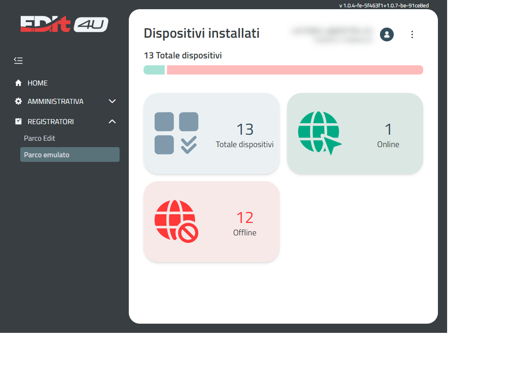
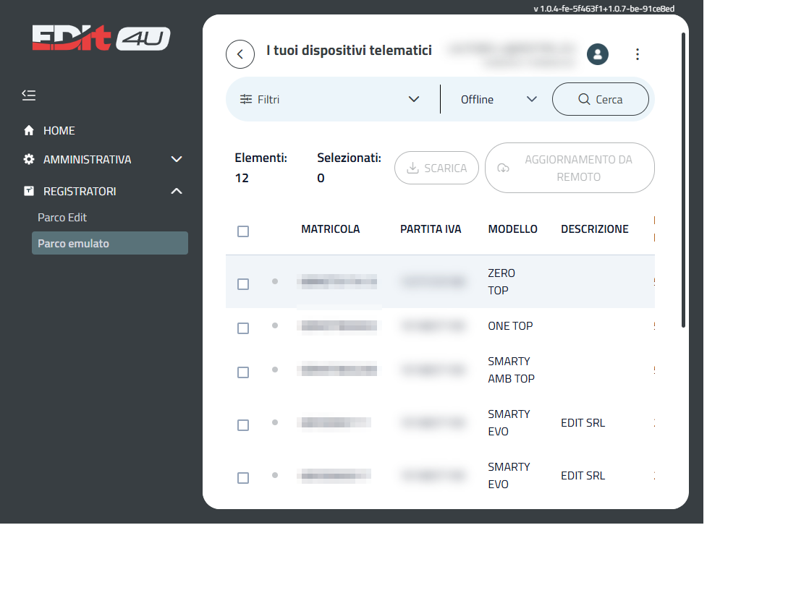
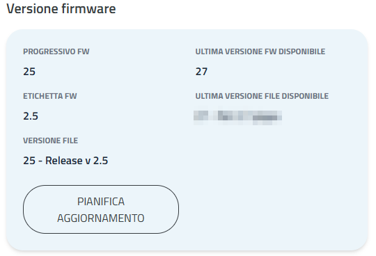

Portale Edit4U
Il portale in breve
Il portale Edit4U è il punto di accesso online per seguire i registratori di cassa associati alla tua partita IVA. Da qui vedi lo stato dei registratori, controlli la telemetria e programmi l'aggiornamento da remoto, senza spostarti sul posto.
- Controllo: lo stato di tutti i registratori in un solo posto.
- Aggiornamenti: programmazione e controllo dell'esito dell'aggiornamento da remoto.
- Avvisi (*): segnalazioni su memoria, giornale e scadenze.
Accesso
- Apri la pagina di accesso del portale.
- Inserisci l'indirizzo email e la password del tuo account.
- Premi Login.
Se non ricordi la password, usa il link Forgot Password? sotto il pulsante di accesso: riceverai via email le istruzioni per sceglierne una nuova.
Menu e Home
- Il menu laterale si apre e si chiude con il pulsante in alto a sinistra. Le funzioni per il tuo parco sono nella voce Registratori.
- La Home contiene il messaggio di benvenuto e un assistente per le domande più comuni. Dalla Home puoi anche impostare la lingua del portale.
- Il pulsante ? in basso a destra apre la guida della pagina in cui ti trovi.
- In alto a destra trovi il tuo profilo e la versione del portale, utile quando richiedi assistenza.
Parco registratori
L'elenco mostra solo i registratori associati alla tua partita IVA, con modello, versione del firmware installata e stato di collegamento.

- Attivo (online): il registratore si è collegato al portale di recente.
- Offline: il registratore non si è collegato al portale di recente.

Filtri
Restringi l'elenco prima di selezionare i registratori da aggiornare o scaricare.
- Matricola: numero di serie del registratore.
- Partita IVA: partita IVA dell'esercente, come nella colonna Partita IVA.
- Descrizione: testo libero da cercare nella descrizione.
- Modello: scegli dall'elenco (ad esempio Smarty Evo o One Top).
- Progressivo FW: versione del firmware (ad esempio 25 - Release v 2.5).
- Stato: Tutti, Online, Offline, Avviso o Errore.
- Cerca: applica i filtri impostati; Resetta filtri li azzera.
- Elementi e Selezionati: conteggio dei risultati e dei registratori selezionati.
- Seleziona tutti: seleziona i registratori del filtro corrente.
- Deseleziona tutto: annulla la selezione.
Scarica il file CSV
Seleziona uno o più registratori e premi SCARICA. Il portale produce un file CSV il cui nome contiene la data di download nel formato AAAAMMGG, ad esempio devices_20261028.csv.
Per leggerlo in colonne con Excel, apri il file e usa Dati > Testo in colonne.
Significato dei campi principali
- serial_number: matricola del registratore.
- registry_id: codice del modello (ad esempio 85 = One Top, 92 = Smarty Evo).
- fw_rel e fw_rel_label: versione del firmware installato.
- rt_status: stato del registratore (ad esempio 4 = servizio telematico).
- retailer_id: partita IVA del concessionario, cioè del tuo account.
- retailer_code: partita IVA dell'esercente.
- retailer_description, retailer_cap, retailer_country: denominazione, CAP e nazione.
Aggiornamento da remoto
Puoi aggiornare uno o più registratori purché abbiano lo stesso modello e la stessa revisione del firmware (ad esempio due SMARTY EVO con FW 2.5).
-
Seleziona i registratori
Il pulsante Aggiornamento da remoto si attiva solo quando la selezione è valida. -
Apri la programmazione
Premi Aggiornamento da remoto: si apre la finestra Programmazione aggiornamento. -
Compila il modulo
Inserisci la versione FW di destinazione e i dati del tecnico. -
Conferma
Premi Conferma: il pulsante resta disattivato finché il modulo non è completo.
Nel modulo il campo Tipo è già impostato su Aggiornamento FW. Il campo Modalità è previsto per usi futuri: al momento non ha effetti sull'aggiornamento. I dati del tecnico sono la partita IVA e il codice fiscale.
Il registratore riceve la richiesta alla sua prossima connessione. Nel portale puoi seguire l'avanzamento: ricevuto, scaricato, installato. In caso di errore o di interruzione volontaria, lo stato lo indica chiaramente.
La scheda del registratore
Aprendo un registratore dall'elenco si accede alla sua scheda, con le sezioni TELEMETRIA e AGGIORNAMENTO DA REMOTO.

- Progressivo FW ed Etichetta FW: versione del firmware installato sul registratore.
- Versione file: file di aggiornamento corrispondente alla versione installata.
- Ultima versione FW e Ultima versione file disponibili: l'ultima release disponibile per il modello.
- Pianifica aggiornamento: apre la finestra Programmazione aggiornamento descritta sopra.
- Cronologia aggiornamenti: le richieste inviate, con data e versione di destinazione, stato (Pianificato o Annullato), operatore e laboratorio indicati nella richiesta. Il pulsante nella colonna Azioni è attivo solo sulle richieste ancora pianificate.
Telemetria
Nella scheda del registratore, la sezione TELEMETRIA riporta i dati fiscali e lo stato di comunicazione.
- Dati fiscali: partita IVA dell'esercente, scadenza della verifica periodica, Hardware init (il portale segnala quando sono meno di 20), stato del dispositivo e date di fiscalizzazione e di scadenza del certificato, quando disponibili (- significa non disponibile).
- Comunicazione: stato Online o Offline del registratore, data e ora dell'ultima attività e data dell'ultima chiusura fiscale.
- Invii telematici: numero di invii effettuati e invii pendenti, cioè chiusure eseguite sul registratore e non ancora inviate al portale.
- Memoria: percentuale della memoria di riepilogo utilizzata, numero massimo di azzeramenti gestibili e numero già effettuato, spazio occupato dal giornale elettronico e numero progressivo.
Avvisi automatici (*)
Il portale segnala in anticipo le situazioni che richiedono attenzione:
- Memoria fiscale in esaurimento: contatta l'assistenza.
- Giornale elettronico quasi pieno: pianifica un intervento.
- Scadenza verifica periodica in arrivo: fissa l'appuntamento per tempo.
- Inizializzazioni residue basse.
- Chiusure da trasmettere: ci sono chiusure fiscali non ancora inviate.
Associazione del registratore
Edit4U collega ogni registratore al profilo del rivenditore o del centro di assistenza corretto. La partita IVA usata dipende dalla situazione:
- Protezione Parco attiva: si usa la partita IVA del laboratorio di assistenza associato al servizio.
- Protezione Parco non attiva: il tecnico può indicare la partita IVA del rivenditore da associare alla cassa.
- In attesa di impostazione: si usa l'ultimo intervento tecnico; se non ce ne sono, il dato registrato all'attivazione.
Il registratore comunica subito l'associazione aggiornata e Edit4U la collega al profilo corretto del rivenditore. Per i dettagli sulla Protezione Parco vedi Protezione parco installato.
Consigli pratici
Un percorso semplice da seguire periodicamente:
- Accedi.
- Controlla lo stato dei registratori.
- Leggi gli avvisi.
- Programma l'aggiornamento, se necessario.
- Verifica l'esito.
Ti consigliamo di ripetere il controllo una volta a settimana, o comunque prima di periodi di maggiore attività.
- Controlla gli avvisi con regolarità, per intervenire in anticipo.
- Non rimandare la scadenza della verifica periodica.
- Verifica che l'aggiornamento risulti completato prima di riprendere l'attività.
- Mantieni aggiornata la password e usa il recupero password se la dimentichi.
- Per dubbi usa il pulsante ? oppure contatta il tuo referente Edit4U.